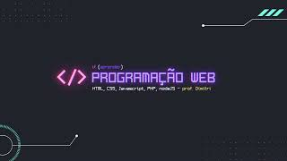

Material de aula (slides, leituras, ect) do curso de Programação para a Web do Curso de Ciência da Computação da UFCG.
Estudar programação web é essencial no mundo digital atual, onde a internet se tornou uma parte integral da vida cotidiana e dos negócios. Com habilidades em programação web, você pode criar e manter sites que servem como a face online de empresas, instituições e indivíduos. Isso não só aumenta a visibilidade e acessibilidade de um negócio ou serviço, mas também permite uma comunicação mais eficiente com clientes e usuários. Em um mercado de trabalho cada vez mais competitivo, ter conhecimentos em programação web pode diferenciar você de outros candidatos e abrir portas para diversas oportunidades de carreira.
Além disso, a programação web permite que você desenvolva soluções inovadoras e personalizadas para atender necessidades específicas. Desde o desenvolvimento de aplicações web interativas até a criação de sistemas de gerenciamento de conteúdo, a capacidade de programar para a web facilita a implementação de ideias criativas e funcionais. A compreensão das linguagens de programação como HTML, CSS e JavaScript, e a familiaridade com frameworks e bibliotecas, possibilita o desenvolvimento de sites responsivos e dinâmicos que proporcionam uma melhor experiência do usuário.
Por fim, estudar programação web promove o desenvolvimento de habilidades de resolução de problemas e pensamento lógico. A prática de codificação exige atenção aos detalhes e a capacidade de dividir problemas complexos em partes menores e manejáveis. Isso não só melhora sua competência técnica, mas também aprimora habilidades analíticas e críticas que são valiosas em qualquer campo. Em um mundo onde a tecnologia está em constante evolução, manter-se atualizado com as tendências e avanços em programação web é fundamental para garantir a relevância e a eficácia das suas habilidades profissionais.